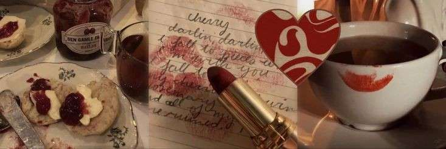

You are now following fawn!
fawn
@fawnwhispers
creating stuff for sillytavern ✦ presets, regex & more
welcome to my digital garden
welcome to my digital garden
142 Following
8.5K Followers
Приветствие
привет-привет!
я — фавн, а это мой склад всего, что я делаю ручками для sillytavern
здесь вы найдёте:
связаться со мной можно по ссылкам ниже
удачного исследования.
я — фавн, а это мой склад всего, что я делаю ручками для sillytavern
здесь вы найдёте:
- мой пресет и его гайд;
- мои регексы на улучшение визуала и гайды по установке;
- библиотеку моих расширений и расширений других авторов;
- раздел с траблшутингом
связаться со мной можно по ссылкам ниже
удачного исследования.
12
3
42
Над чем я сейчас работаю
Здесь будет подробное описание текущих проектов. Например, разработка нового расширения для улучшения диалогов или обновление гайда по установке пресетов. Следите за обновлениями!
5
1
18
Использованные ресурсы
Для создания этого сайта были использованы:
- Font Awesome для иконок
- Google Fonts для шрифта Nunito
- Чистый HTML, CSS и JavaScript
2
0
9
